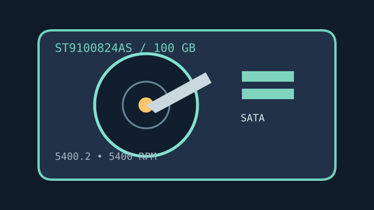

[ IDENTIFIED HDD // MODEL-SPECIFIC RECORD ]
Seagate Momentus 5400.2 ST9100824AS
100 GB, 2.5-inch mobile SATA hard drive. The terminal “AS” identifies the SATA model; do not substitute the PATA “A” version based only on family name.

IDENTIFICATION: Record the complete suffix and firmware. Connector fit alone does not establish controller, BIOS or sector-format compatibility.
Recorded specifications
| Exact model / capacity | ST9100824AS / 100 GB nominal |
|---|---|
| Form factor / height | 2.5-inch / 9.5 mm |
| Interface | Serial ATA, 1.5 Gb/s generation |
| Rotation / cache | 5,400 RPM / 8 MB buffer |
| Sector / recording format | 512 bytes per sector; perpendicular magnetic recording (PMR), not Advanced Format 512e. |
Compatibility, noise, shock and reliability
- Use a SATA host or compatible bridge; a 1.5 Gb/s device can generally negotiate on later SATA hosts, but BIOS limits, bridge firmware and power behavior can still prevent use.
- Momentus 5400.2 family documents specify noise levels by idle/seek mode and shock limits by operating state. Treat the stated non-operating shock rating as a controlled test condition, never as a drop allowance.
- Load/unload and reliability ratings are population-level design limits, not a warranty or estimate of the remaining life of a used unit. Back up verified data independently.
- Check logical sector reporting and actual addressable capacity before imaging, partitioning or using a legacy operating system.
Manufacturer documents
- Seagate Momentus 5400.2 SATA Product Manual, Rev. CManufacturer model-family operating, installation and environmental documentation.
- Seagate Momentus 5400 Data SheetManufacturer product-family summary; the model-specific manual governs SATA and capacity details.
- Seagate Manuals LibraryOfficial documentation index for locating current or archived revisions by model/publication number.